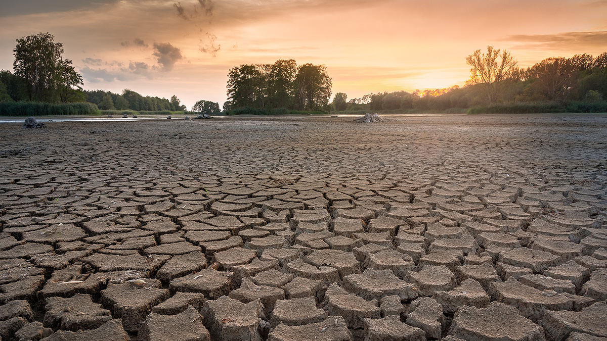

O Problema Agrícola & Mudanças Climáticas
O aumento global das temperaturas e a instabilidade climática severa têm provocado perdas massivas em lavouras por todo o mundo. Produtores sofrem para prever com precisão períodos de estiagem prolongada e anomalias térmicas locais.
